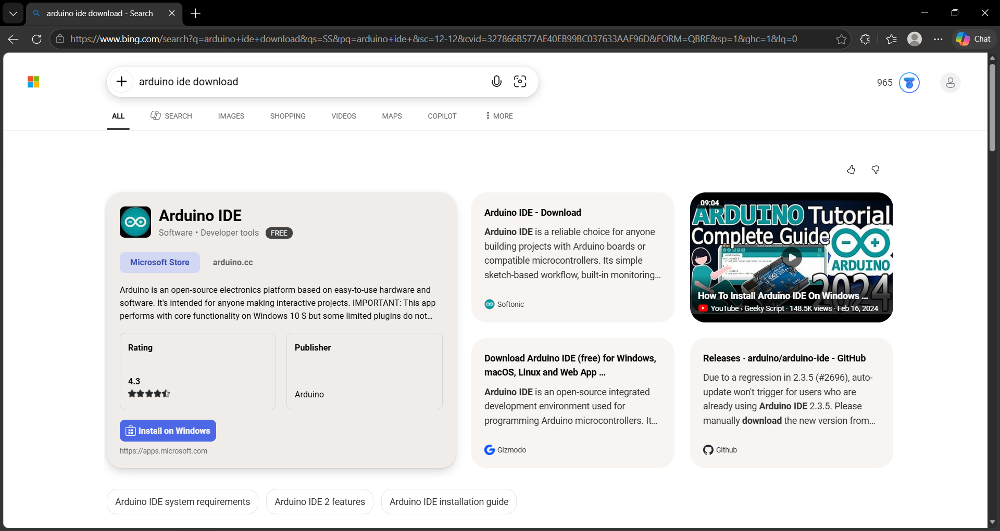
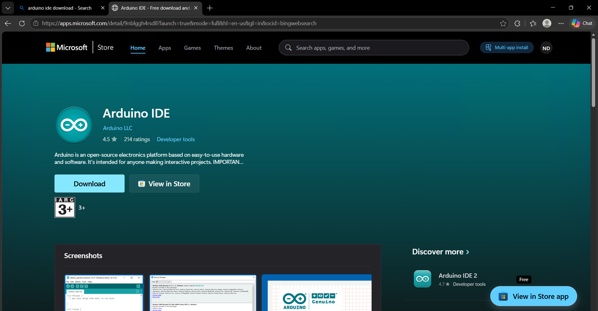
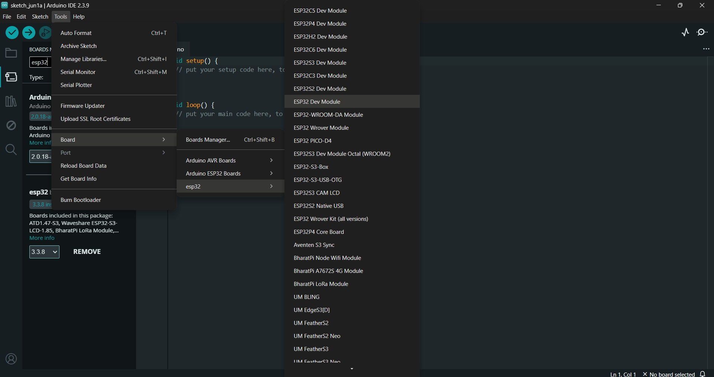
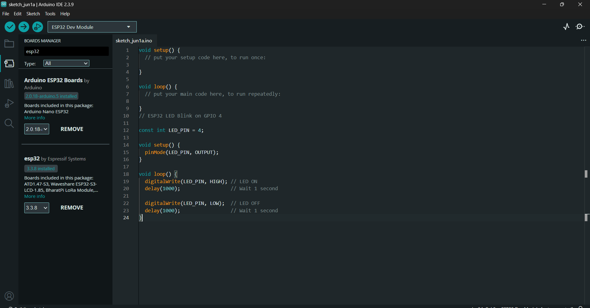
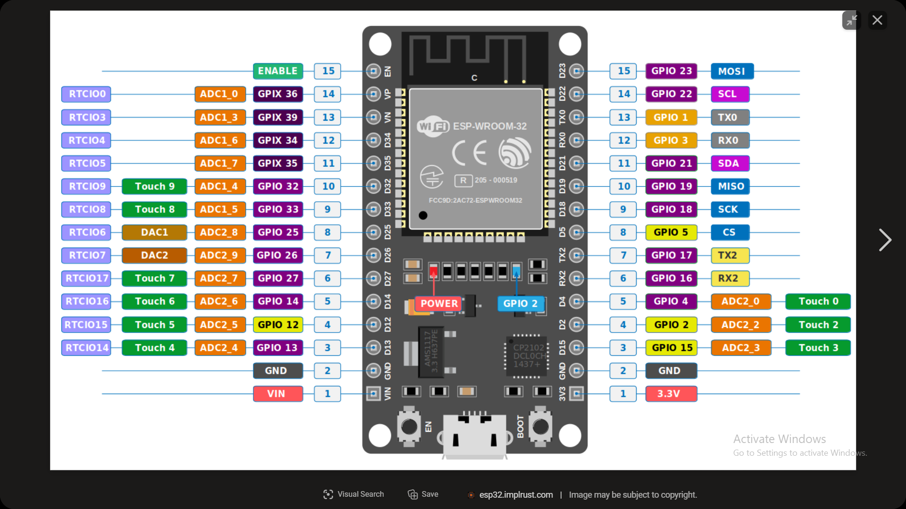
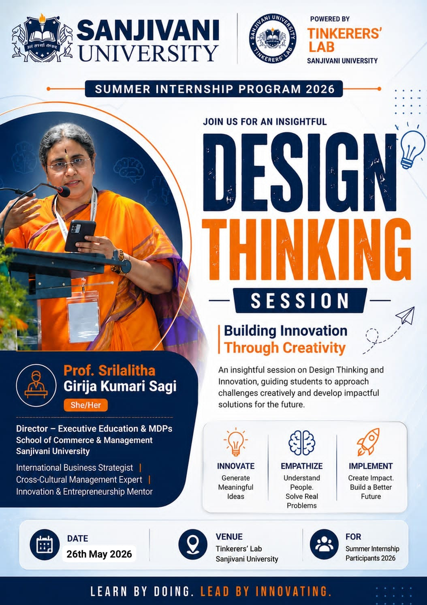

Step 6: Design Thinking Session
Attended an insightful Design Thinking session conducted by Prof. Srilalitha Girija Kumari Sagi at Tinkerers' Lab. Learned the three pillars of Design Thinking: Innovate, Empathize and Implement.

Summer Internship Documentation
← Back to PortfolioTo learn Arduino IDE setup, configure ESP32 board support, write and upload a basic LED Blink program, understand ESP32 pinout, attend a Design Thinking session, and document the entire workflow using VS Code and GitHub.
Began the day by searching for Arduino IDE download. Explored the Microsoft Store and installed the latest version.

Opened Arduino IDE (v2.3.9) and created a new sketch file containing the default setup() and loop() functions.

Used Boards Manager to install Arduino ESP32 Boards (v2.0.18) and Espressif Systems ESP32 package (v3.3.8). Verified successful installation.

Selected ESP32 Dev Module and wrote a simple LED Blink program using GPIO 4. Uploaded the code successfully and observed the LED blinking every second.

Examined the ESP32 pinout diagram and learned about GPIO pins, ADC channels, DAC outputs, Touch Inputs, SPI, I2C and UART communication.

Attended an insightful Design Thinking session conducted by Prof. Srilalitha Girija Kumari Sagi at Tinkerers' Lab. Learned the three pillars of Design Thinking: Innovate, Empathize and Implement.
Documented the complete workflow in VS Code with screenshots, observations, outcomes and reflections.
Uploaded the documentation and Arduino project files to GitHub using Git commands and verified successful synchronization.
| Activity | Key Learning | Outcome |
|---|---|---|
| Arduino IDE Setup | Software installation and environment setup | IDE configured successfully |
| ESP32 Board Installation | Board package management | ESP32 ready for programming |
| LED Blink Program | GPIO control and programming basics | LED blink successful |
| ESP32 Pinout Study | Hardware capabilities understanding | Prepared for future IoT projects |
| Design Thinking Session | Innovation and empathy-driven design | Broader problem-solving mindset |
Day 4 was a complete cycle of electronics, creativity and documentation. From blinking an LED on ESP32 to reflecting on Design Thinking principles, I learned that innovation lies at the intersection of technical skills and human empathy. Documenting the workflow and publishing it through GitHub strengthened my understanding of professional engineering practices.
In the afternoon, Prof. Srilalitha Girija Kumari Sagi conducted an inspiring session on Design Thinking and Innovation. She explained that successful products are built by understanding user needs and solving real-world problems creatively.
The session focused on the five stages of Design Thinking:
The professor shared practical examples of innovation in engineering, startups, and technology development. She encouraged us to combine technical skills with empathy to develop meaningful solutions that positively impact society.

The Arduino exploration provided hands-on experience with microcontroller programming and hardware interfacing. The Design Thinking session complemented this by teaching us how technology should be applied to solve real user problems.
Together, these activities demonstrated the importance of combining technical implementation with creative problem-solving. Arduino acts as a powerful prototyping platform, while Design Thinking ensures that solutions remain user-centered and impactful.
| Activity | Key Details | Learning Outcome |
|---|---|---|
| Arduino Exploration | IDE setup, Blink program, Serial Monitor | Technical confidence with microcontrollers |
| Design Thinking Session | Empathize, Define, Ideate, Prototype, Test | Creative approach to problem-solving |
Week 2 Day 4 was a balanced combination of technical learning and innovation thinking. The Arduino session strengthened my understanding of microcontrollers and programming fundamentals, while the Design Thinking workshop expanded my perspective on problem-solving. Prof. Srilalitha Girija Kumari Sagi emphasized that successful engineering solutions must not only function correctly but also address genuine human needs. This session encouraged me to think beyond technology and focus on creating impactful innovations.